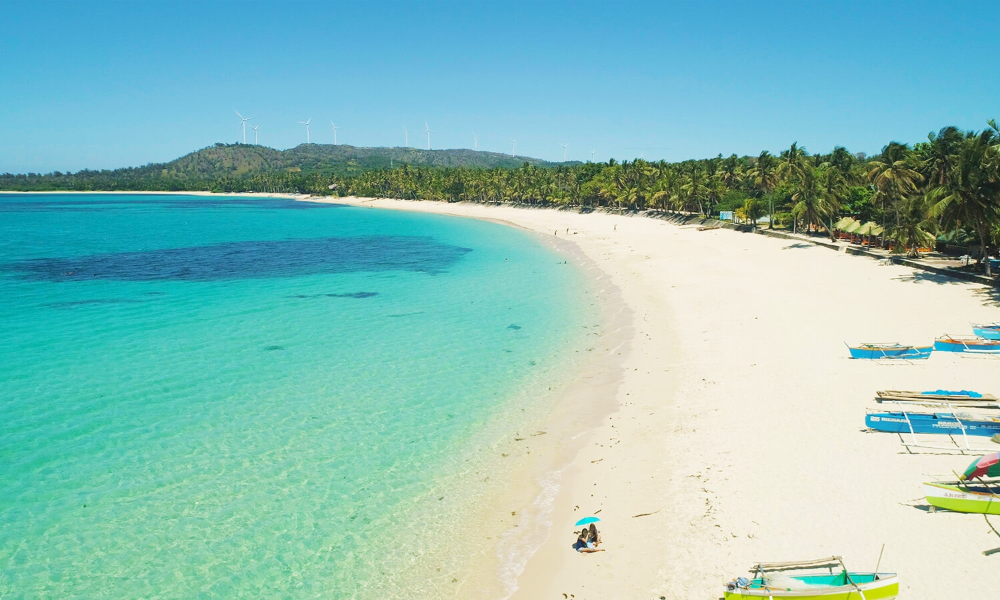

Ilocos Norte is one of the most beautiful provinces in the Philippines. It is known for its rich history, scenic beaches, giant windmills, and breathtaking natural attractions. It is a perfect destination for sightseeing, adventure, and relaxation.

Pagudpud Beach is famous for its white sand, crystal-clear water, and peaceful atmosphere. It is often called the "Boracay of the North.
The Bangui Windmills are one of the most famous landmarks in Ilocos Norte. They provide clean energy and offer beautiful coastal views.
Kapurpurawan Rock Formation is known for its unique white limestone rocks shaped by wind and sea waves over many years.